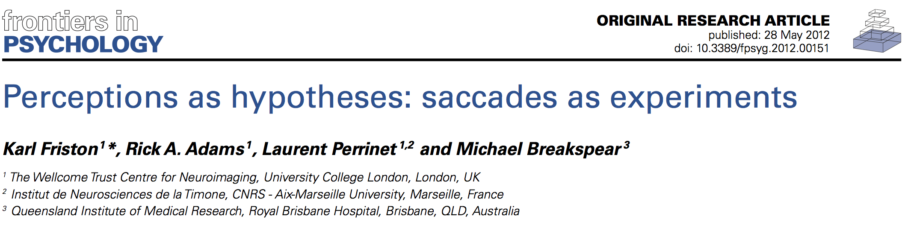

If perception corresponds to hypothesis testing (Gregory, 1980); then visual searches might be construed as experiments that generate sensory data. In this work, we explore the idea that saccadic eye movements are optimal experiments, in which data are gathered to test hypotheses or beliefs about how those data are caused. This provides a plausible model of visual search that can be motivated from the basic principles of self-organized behavior: namely, the imperative to minimize the entropy of hidden states of the world and their sensory consequences. This imperative is met if agents sample hidden states of the world efficiently. This efficient sampling of salient information can be derived in a fairly straightforward way, using approximate Bayesian inference and variational free-energy minimization. Simulations of the resulting active inference scheme reproduce sequential eye movements that are reminiscent of empirically observed saccades and provide some counterintuitive insights into the way that sensory evidence is accumulated or assimilated into beliefs about the world.

This schematic shows the dependencies among various quantities that are assumed when modeling the exchanges of a self organizing system like the brain with the environment. The top panel describes the states of the environment and the system or agent in terms of a probabilistic dependency graph, where connections denote directed dependencies. The quantities are described within the nodes of this graph with exemplar forms for their dependencies on other variables (see main text). Here, hidden and internal states are separated by action and sensory states. Both action and internal states encoding a conditional density minimize free energy, while internal states encoding prior beliefs maximize salience. Both free energy and salience are defined in terms of a generative model that is shown as fictive dependency graph in the lower panel. Note that the variables in the real world and the form of their dynamics are different from that assumed by the generative model; this is why external states are in bold. Furthermore, note that action is a state in the model of the brain but is replaced by hidden controls in the brain’s model of its world. This means that the agent is not aware of action but has beliefs about hidden causes in the world that action can fulfill through minimizing free energy. These beliefs correspond to prior expectations that sensory states will be sampled in a way that optimizes conditional confidence or salience.